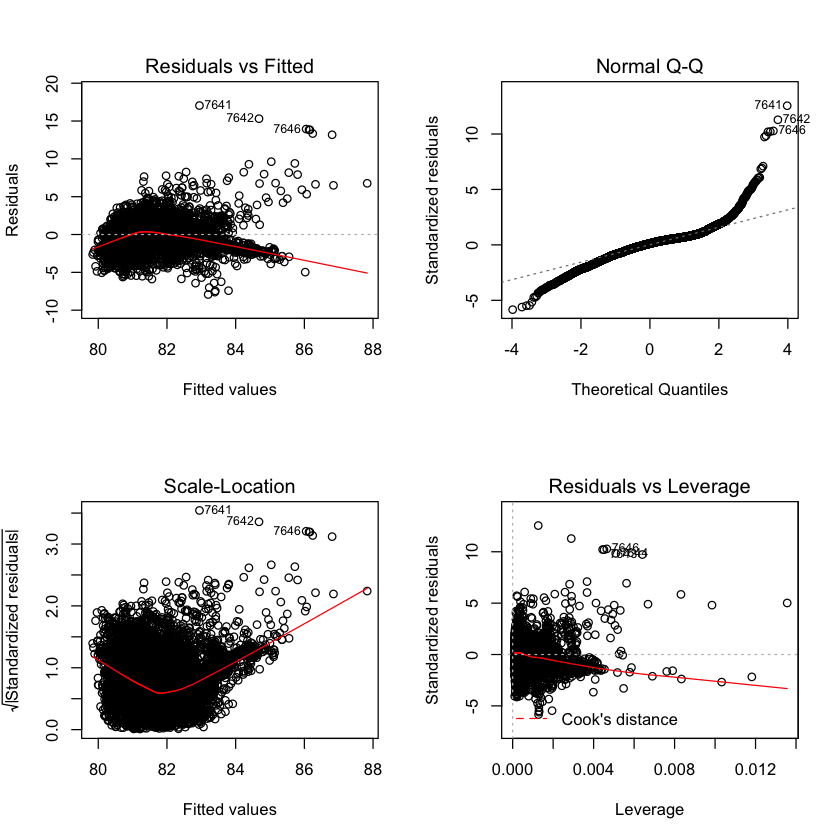
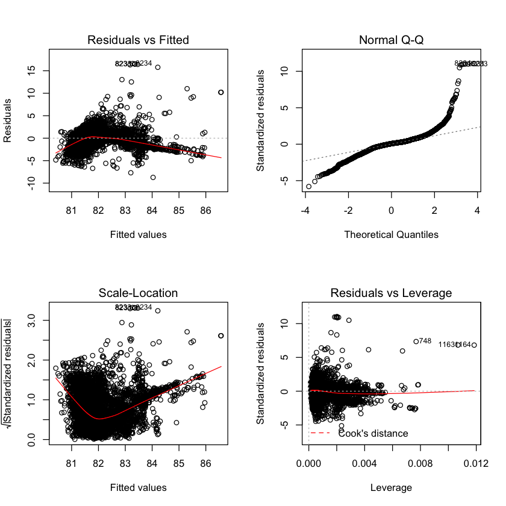
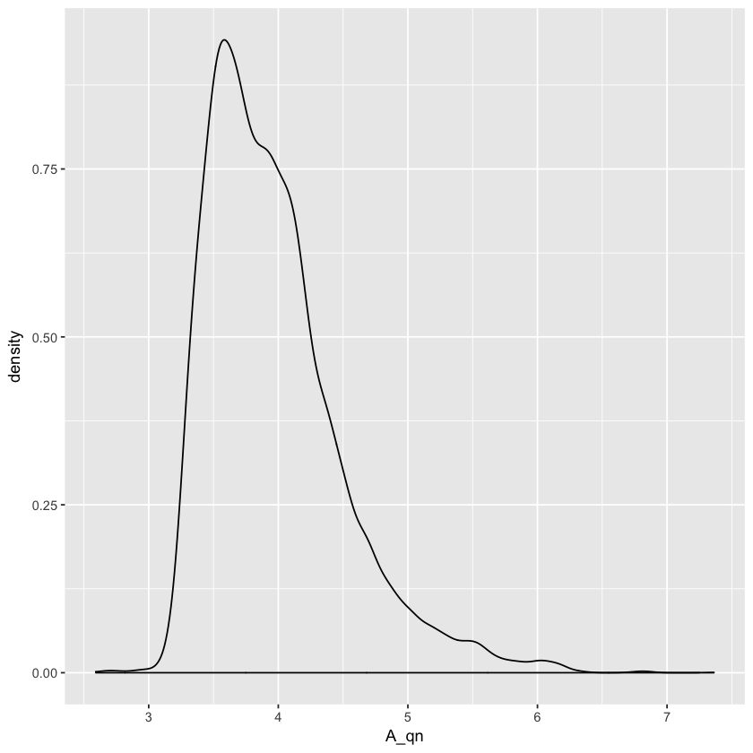
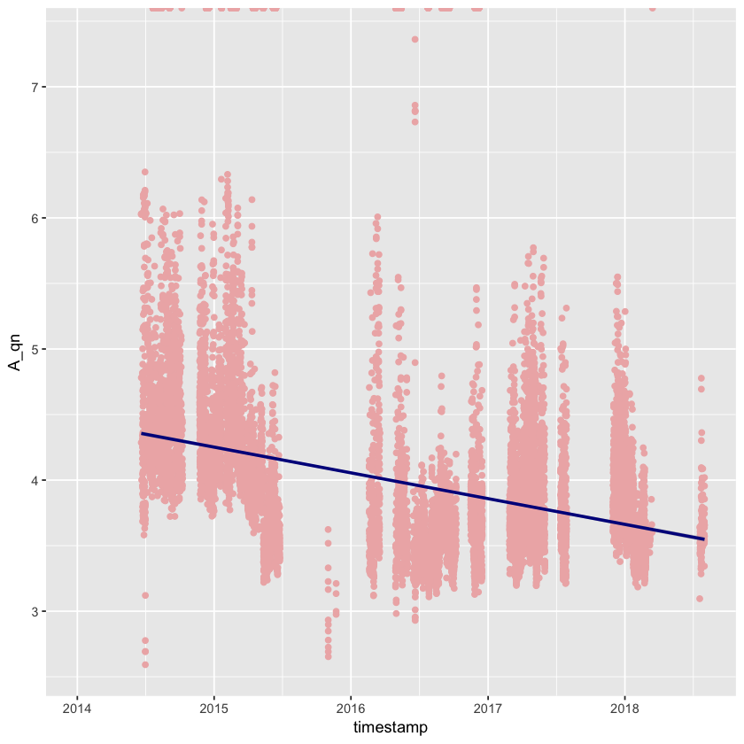
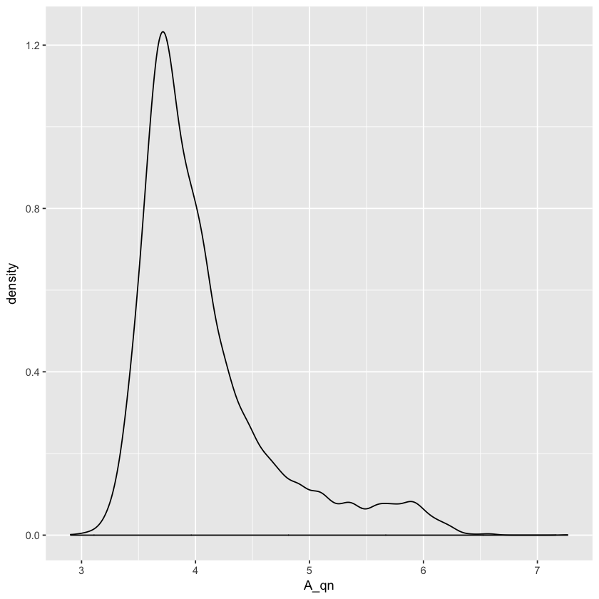
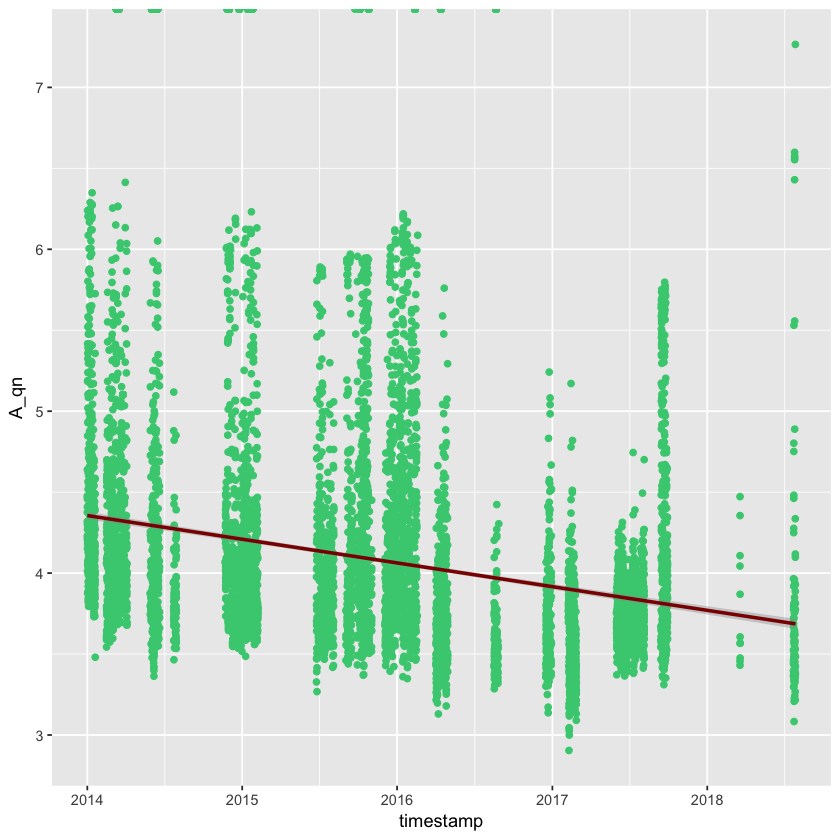
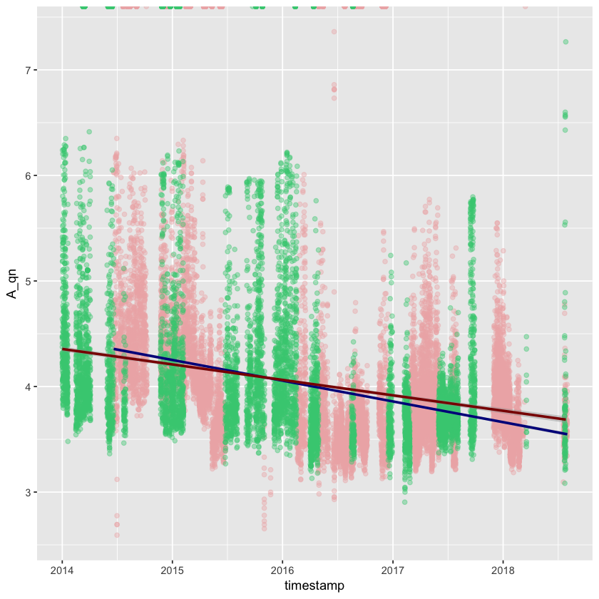

火电脱硝效率回归分析
机组脱硝测点数据 相关性分析
多元回归建模
加载R相关包
library(opentsdbr)
library(tidyr)
library(dplyr)
library(magrittr)
library(corrplot)
library(ggplot2)
library(reshape2)
library(TTR)
指定分析时段
inter <- interval(ymd_hms("2014-01-01 00:00:00"), ymd_hms("2018-08-01 11:59:59"))
参考业务上定义的32机组重点测点(A测)
tagcodes_32 <- as.list(c(
'08ksci008_2a', #机组负荷
'unitcoalflo_2a', #机组总煤量
#'2coalbsavg_c', #发电煤耗
'08fsaeu60c_2a', #一次风温度
'08frate76d_2a', #A侧空预器出口二次风温
'08hsa10cq101b_2a', #A侧反应器入口O2含量
#'08ascr_nox_set_2a', #A侧反应器出口NOx设定
#'08ascr_xl_set_2a', #A侧反应器脱硝率设定
'08bakai001_2a', #A侧反应器入口NH3流量
'08xiaolva_2a', #A侧反应器脱硝率
'08bakai008_2a', #A侧反应器入口NOx
'08bakai006_2a', #A侧反应器出口NOx
'08hsa10cq105_2a', #A侧反应器出口NH3逃逸
'08hsd10dp101_2a', #A侧催化剂层压差
#'33hta00cq004_t1a', #出口烟尘浓度
'08ftaan001xb13_2a' #引风机A电机电流
#'33fgd2rtu-ao3_t1a' #入口烟气量
))
参考业务上定义的31机组重点测点(A测)
tagcodes_31 <- as.list(c(
'07gevji001_c18_1a', #机组负荷
'unitcoalflo_1a', #机组总煤量
#'1coalbsavg_c', #发电煤耗
'07fsaeu60c_1a', #一次风温度
'07frate76d_1a', #A侧空预器出口二次风温
'07hsa10cq101b_1a', #A侧反应器入口O2含量
#'07ascr_nox_set_1a', #A侧反应器出口NOx设定
#'07ascr_xl_set_1a', #A侧反应器脱硝率设定
'07bakai001_1a', #A侧反应器入口NH3流量
'07xiaolva_1a', #A侧反应器脱硝率
'07bakai008_1a', #A侧反应器入口NOx
'07bakai006_1a', #A侧反应器出口NOx
'07hsa10cq105_1a', #A侧反应器出口NH3逃逸
'07hsd10dp101_1a', #A侧催化剂层压差
#'33hta00cq004_t1a', #出口烟尘浓度
'07ftaan001xb13_1a' #引风机A电机电流
#'33fgd2rtu-ao3_t1a' #入口烟气量
))
定义获取测点数据函数
get_tag_info_from_opentsdb <- function(code,ag,ds,hs='xxxx',port=14242){
result <- try(tsd_get(metric = code,inter,agg=ag,hostname = hs ,port=port,downsample = ds))
if ('try-error' %in% class(result)) {
message("测点：",code," 无数据")
# 部分测点数据为空
return(NULL)
}else{
# 行列转换
tmp <- dcast(result[,1:3],timestamp~metric)
return(tmp)
}
}
读取32机组测点数据
tagdata_32 <- lapply(tagcodes_32,
get_tag_info_from_opentsdb,
ag='zimsum',
ds <- '1h-avg-zero',
hs='cdh-2')
读取31机组测点数据
tagdata_31 <- lapply(tagcodes_31,
get_tag_info_from_opentsdb,
ag='zimsum',
ds <- '1h-avg-zero',
hs='cdh-2')
将从opentsdb中的测点列表数据 转化成 dataframe 数据框格式
df_tagdata_32 <- reshape::merge_recurse(tagdata_32);
df_tagdata_31 <- reshape::merge_recurse(tagdata_31)
将测点编码转换成测点名称
tag_names_cn <- c('机组负荷',
'机组总煤量',
#'发电煤耗',
'一次风温度',
'A侧空预器出口二次风温',
'A侧反应器入口O2含量',
#'A侧反应器出口NOx设定',
#'A侧反应器脱硝率设定',
'A侧反应器入口NH3流量',
'A侧反应器脱硝率',
'A侧反应器入口NOx',
'A侧反应器出口NOx',
'A侧反应器出口NH3逃逸',
'A侧催化剂层压差',
#'出口烟尘浓度',
'引风机A电机电流'
#,'入口烟气量'
)
names(df_tagdata_32)[-1] <- tag_names_cn
names(df_tagdata_31)[-1] <- tag_names_cn
数据框描述性统计
summary(df_tagdata_32)
timestamp 机组负荷 机组总煤量 一次风温度
Min. :2014-01-01 00:00:00 Min. : -1 Min. : 0 Min. : 0
1st Qu.:2015-02-23 08:45:00 1st Qu.: 0 1st Qu.: 0 1st Qu.: 19
Median :2016-04-16 17:30:00 Median : 90 Median : 52 Median :223
Mean :2016-04-16 17:30:00 Mean :121 Mean : 39 Mean :150
3rd Qu.:2017-06-09 02:15:00 3rd Qu.:225 3rd Qu.: 65 3rd Qu.:276
Max. :2018-08-01 11:00:00 Max. :661 Max. :296 Max. :328
A侧空预器出口二次风温 A侧反应器入口O2含量 A侧反应器入口NH3流量 A侧反应器脱硝率
Min. :-73 Min. : 0 Min. : 0 Min. : 0
1st Qu.: 22 1st Qu.: 5 1st Qu.: 0 1st Qu.: 0
Median :196 Median : 6 Median : 45 Median : 40
Mean :151 Mean : 17 Mean : 47 Mean : 40
3rd Qu.:277 3rd Qu.: 21 3rd Qu.: 81 3rd Qu.: 82
Max. :366 Max. :297 Max. :226 Max. :100
A侧反应器入口NOx A侧反应器出口NOx A侧反应器出口NH3逃逸 A侧催化剂层压差
Min. : -8 Min. : -5 Min. : 0 Min. : -1
1st Qu.: 0 1st Qu.: 0 1st Qu.: 0 1st Qu.: 10
Median : 0 Median : 3 Median : 0 Median :192
Mean : 329 Mean : 55 Mean : 8 Mean :125
3rd Qu.: 544 3rd Qu.:105 3rd Qu.: 1 3rd Qu.:218
Max. :4332 Max. :772 Max. :473 Max. :356
引风机A电机电流
Min. :-75
1st Qu.: -2
Median : 0
Mean : 50
3rd Qu.: 96
Max. :225
summary(df_tagdata_31)
timestamp 机组负荷 机组总煤量 一次风温度
Min. :2014-01-01 00:00:00 Min. : 0 Min. : 0 Min. : 0
1st Qu.:2015-02-23 08:45:00 1st Qu.: 0 1st Qu.: 0 1st Qu.: 13
Median :2016-04-16 17:30:00 Median : 0 Median : 0 Median : 23
Mean :2016-04-16 17:30:00 Mean : 71 Mean : 19 Mean : 95
3rd Qu.:2017-06-09 02:15:00 3rd Qu.:207 3rd Qu.: 57 3rd Qu.:267
Max. :2018-08-01 11:00:00 Max. :334 Max. :106 Max. :323
A侧空预器出口二次风温 A侧反应器入口O2含量 A侧反应器入口NH3流量 A侧反应器脱硝率
Min. :-71 Min. : 0.0 Min. : 0 Min. : 0
1st Qu.: 19 1st Qu.: 5.3 1st Qu.: 0 1st Qu.: 0
Median : 28 Median :21.0 Median : 0 Median : 0
Mean :100 Mean :13.5 Mean : 31 Mean : 24
3rd Qu.:272 3rd Qu.:21.0 3rd Qu.: 70 3rd Qu.: 81
Max. :330 Max. :23.6 Max. :213 Max. :100
A侧反应器入口NOx A侧反应器出口NOx A侧反应器出口NH3逃逸 A侧催化剂层压差
Min. : -5 Min. : -1 Min. :-0.2 Min. : -6
1st Qu.: 0 1st Qu.: 0 1st Qu.: 0.0 1st Qu.: -5
Median : 0 Median : 0 Median : 0.4 Median : 0
Mean : 231 Mean : 40 Mean : 0.5 Mean : 66
3rd Qu.: 580 3rd Qu.:105 3rd Qu.: 0.8 3rd Qu.:191
Max. :2075 Max. :880 Max. : 9.3 Max. :331
引风机A电机电流
Min. :-75
1st Qu.: 0
Median : 0
Mean : 32
3rd Qu.: 94
Max. :206
异常数据剔除
filtered_31_df <- filter(df_tagdata_31,机组负荷>200 & 机组总煤量>50 & 一次风温度>250& A侧空预器出口二次风温>250& A侧反应器入口NH3流量>50 & A侧反应器脱硝率>75)
filtered_32_df <- filter(df_tagdata_32,机组负荷>200 & 机组总煤量>50 & 一次风温度>250& A侧空预器出口二次风温>250& A侧反应器入口NH3流量>50 & A侧反应器脱硝率>75)
32机组的多元线性回归模型
model_32 <- lm(A侧反应器脱硝率 ~
机组负荷 +
#机组总煤量 +
一次风温度 +
#A侧空预器出口二次风温 +
#A侧反应器入口O2含量 +
A侧反应器入口NH3流量 +
#A侧反应器入口NOx +
A侧反应器出口NOx +
A侧反应器出口NH3逃逸 +
A侧催化剂层压差
#引风机A电机电流
,data = filtered_32_df)
31机组的多元线性回归模型
model_31 <- lm(A侧反应器脱硝率 ~
机组负荷 +
#机组总煤量 +
一次风温度 +
#A侧空预器出口二次风温 +
#A侧反应器入口O2含量 +
A侧反应器入口NH3流量 +
#A侧反应器入口NOx +
A侧反应器出口NOx +
A侧反应器出口NH3逃逸 +
A侧催化剂层压差
#引风机A电机电流
,data = filtered_31_df)
32机组模型可视化
par(mfrow=c(2,2))
plot(model_32)

31机组模型可视化
par(mfrow=c(2,2))
plot(model_31)

计算机组潜能数据
generate_qn <- function(df_tagdata){
options(digits = 2)
## 计算氨氮摩尔比
df_tagdata_mr_new <- mutate(df_tagdata,
#氨氮摩尔比=A侧反应器脱硝率/100 + 2.7*(A侧反应器入口NH3流量/A侧反应器入口NOx)
氨氮摩尔比=A侧反应器脱硝率/100 + 2.7*((A侧反应器出口NH3逃逸*17/22.4)/A侧反应器入口NOx))
# 计算每个小时的潜能数据
df_tagdata_qn <- mutate(df_tagdata_mr_new,
催化剂潜能=0.5*log(氨氮摩尔比/((氨氮摩尔比-A侧反应器脱硝率/100)*(1-A侧反应器脱硝率/100))))
return(df_tagdata_qn)
}
df_tagdata_32_qn <- generate_qn(filtered_32_df)
df_tagdata_31_qn <- generate_qn(filtered_31_df)
tail(df_tagdata_32_qn)
| timestamp | 机组负荷 | 机组总煤量 | 一次风温度 | A侧空预器出口二次风温 | A侧反应器入口O2含量 | A侧反应器入口NH3流量 | A侧反应器脱硝率 | A侧反应器入口NOx | A侧反应器出口NOx | A侧反应器出口NH3逃逸 | A侧催化剂层压差 | 引风机A电机电流 | 氨氮摩尔比 | 催化剂潜能 | |
|---|---|---|---|---|---|---|---|---|---|---|---|---|---|---|---|
| 14576 | 2018-08-01 06:00:00 | 211 | 59 | 294 | 295 | 5.5 | 77 | 80 | 570 | 114 | 0.74 | 242 | 99 | 0.80 | 3.7 |
| 14577 | 2018-08-01 07:00:00 | 211 | 59 | 295 | 296 | 5.4 | 76 | 79 | 559 | 115 | 0.34 | 239 | 100 | 0.79 | 4.0 |
| 14578 | 2018-08-01 08:00:00 | 211 | 59 | 295 | 296 | 5.2 | 78 | 80 | 568 | 114 | 0.50 | 235 | 99 | 0.80 | 3.9 |
| 14579 | 2018-08-01 09:00:00 | 212 | 58 | 295 | 296 | 5.3 | 78 | 81 | 566 | 108 | 0.43 | 235 | 99 | 0.81 | 4.0 |
| 14580 | 2018-08-01 10:00:00 | 212 | 58 | 293 | 294 | 5.1 | 76 | 81 | 547 | 104 | 0.59 | 233 | 99 | 0.81 | 3.8 |
| 14581 | 2018-08-01 11:00:00 | 212 | 57 | 291 | 292 | 5.3 | 77 | 81 | 550 | 107 | 0.75 | 232 | 99 | 0.81 | 3.7 |
字段还原英文显示
tag_names_cn <- c('jzfh',
'jzzm',
'ycfwd',
'A_kyqecfwd',
'A_o2',
'A_NH3',
'A_xl',
'A_rk_NOx',
'A_ck_NOx',
'A_ty_NH3',
'A_yc',
'A_yfjdl',
'A_mr',
'A_qn'
)
names(df_tagdata_32_qn)[-1] <- tag_names_cn
names(df_tagdata_31_qn)[-1] <- tag_names_cn
head(df_tagdata_32_qn)
| timestamp | jzfh | jzzm | ycfwd | A_kyqecfwd | A_o2 | A_NH3 | A_xl | A_rk_NOx | A_ck_NOx | A_ty_NH3 | A_yc | A_yfjdl | A_mr | A_qn |
|---|---|---|---|---|---|---|---|---|---|---|---|---|---|---|
| 2014-01-01 00:00:00 | 242 | 74 | 281 | 284 | 5.9 | 110 | 82 | 0 | 131 | 0.0036 | 238 | 103 | Inf | NaN |
| 2014-01-01 01:00:00 | 242 | 74 | 280 | 282 | 5.6 | 110 | 82 | 0 | 129 | 0.0657 | 232 | 100 | Inf | NaN |
| 2014-01-01 02:00:00 | 242 | 74 | 282 | 283 | 5.5 | 109 | 82 | 0 | 128 | 0.7654 | 231 | 100 | Inf | NaN |
| 2014-01-01 03:00:00 | 242 | 73 | 283 | 285 | 5.4 | 108 | 82 | 0 | 130 | 0.8523 | 233 | 100 | Inf | NaN |
| 2014-01-01 04:00:00 | 242 | 72 | 285 | 288 | 5.4 | 107 | 82 | 0 | 132 | 0.4474 | 232 | 100 | Inf | NaN |
| 2014-01-01 05:00:00 | 242 | 72 | 287 | 289 | 5.4 | 106 | 82 | 0 | 133 | 0.0498 | 235 | 101 | Inf | NaN |
32机组的潜能概率密度分布图
ggplot(df_tagdata_32_qn) +
geom_density(aes(x=A_qn))

32机组潜能分布散点图和趋势线
ggplot(df_tagdata_32_qn,aes(x=timestamp,y=A_qn)) +
geom_point(color = "rosybrown2") +
geom_smooth(method="lm",color = "darkblue")

31机组潜能概率分布图
ggplot(df_tagdata_31_qn) +
geom_density(aes(x=A_qn))

31机组潜能分布散点图和趋势线
ggplot(df_tagdata_31_qn,aes(x=timestamp,y=A_qn)) +
geom_point(color = "seagreen3") +
geom_smooth(method="lm",color = "darkred")

将两个机组的潜能数据进行合并显示
ggplot() +
geom_point(data = df_tagdata_32_qn,aes(x=timestamp,y=A_qn), color = "rosybrown2",alpha=.4) +
geom_point(data = df_tagdata_31_qn,aes(x=timestamp,y=A_qn), color = "seagreen3",alpha=.4) +
geom_smooth(data=df_tagdata_32_qn,method="lm",aes(x=timestamp,y=A_qn),color = "darkblue") +
geom_smooth(data=df_tagdata_31_qn,method="lm",aes(x=timestamp,y=A_qn),color = "darkred")
